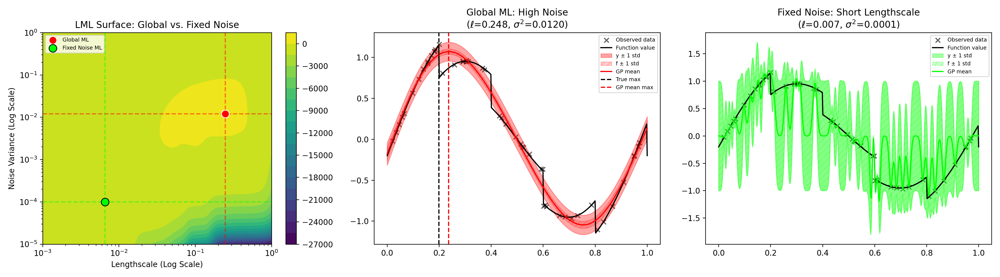
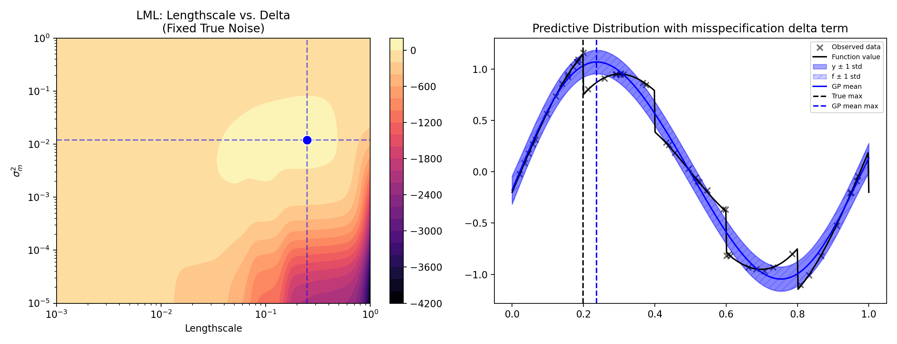

Clarifying noise vs model misspecification in Gaussian Process models (and its importance in BO)
The most common kind of Gaussian process (GP) model is:
f \sim GP\left(\mu(\cdot), k(\cdot, \cdot)\right)
y \sim \mathcal N(f(x), \sigma^2)
Essentially, the function of interest is sampled from a Gaussian process, and observations are noisy versions of the function values with Gaussian noise of standard deviation \sigma. Model fitting is done either by maximum likelihood or MAP (maximum a posteriori), with the parameters fitted being:
- Parameters of the mean function \mu and kernel function k (for example: constant mean value, kernel lengthscale, etc).
- The noise value \sigma.
Seems like a reasonable model, right?
Noise is really “noise plus misspecification”
Unfortunately, one problem with this model is that the noise term \sigma plays a dual role: it represents not just random fluctuations from the mean, but also unresolvable model misspecification issues. If the true function f violates the GP’s modelling assumptions, the GP fit will collapse to the “closest” GP function f^\* with inflated noise to explain deviations between the observations and f^\*.
An example is shown below. f is a sinusoid with a sawtooth perturbation, introducing discontinuities which cannot be modelled by an RBF GP. The true observation noise is \sigma^2=10^{-4}. We fix the kernel amplitude to be 1.0 and fit the noise and lengthscale terms. The maximum likelihood solution inflates the noise to 0.012 (a 120x increase over the true value), but finds a reasonable lengthscale. The overall GP fit (total error bars) looks decent (visually, most of the points are within 1 standard deviation).

Normally, fixing model parameters to “true” values makes things better. Unfortunately, not here. If we fix \sigma=10^{-4} and only optimize the lengthscale, it finds a very tiny value which produces a very poor fit (rightmost plot). This is because the model which is best able to predict sharp changes in function value is a GP with a very small lengthscale. Such a model predicts way more jumps than we actually see, and therefore has crazy looking error bars. Overall, this result is quite counterintuitive: even if you know the noise, you actually get a better fit if you pretend you don’t know it and fit it as a free parameter.
Problem: wrong balance of epistemic and aleatoric uncertainty
Unfortunately, accepting this solution also has the unintended consequence of mixing up epistemic uncertainty (uncertainty due to not knowing the true function value) and aleatoric uncertainty (uncertainty due to random noise). Although the error bars for y (the observed outputs) generally contain the true function values, the error bars for f (the true underlying function) are much narrower and often generally do not contain the underlying function.
This can make a big practical difference if the GP is being used for something like Bayesian optimization. For example, Thompson sampling1 or predictive entropy search methods would likely behave as if the function maximizer is close to 0.25 (red line) instead of its actual location of 0.2 (black line). This could potentially cause optimization to avoid sampling the actual maximum for quite a long time, or falsely suggest terminating optimization because the algorithm is confident that the maximizer has already been found.
A simple workaround
The simple way to avoid this is to add a third misspecification parameter to the kernel with its own amplitude \sigma^2_m. The new kernel becomes:
k_{\mathrm{new}}(x,x') = k_{\mathrm{orig}}(x,x') + \sigma^2_m \delta(x,x')
where \delta is the Dirac delta function (1 if x=x' otherwise 0).
This model will essentially behave identically to the original model with noise variance \sigma^2_m + \sigma^2, and when fitting with maximum likelihood there will be a continuum of solutions with equal likelihood where \sigma^2_m + \sigma^2 = \mathrm{const} (meaning the parameters \sigma^2_m and \sigma^2 are not identifiable from data alone). However, if you know the value for \sigma^2 (or have a prior belief for its value), fitting via MAP or constrained maximum likelihood will allow the model to increase \sigma^2_m to account for model misspecification while allowing noise to remain low. This is illustrated in the figure below.

Notice the strong similarities to the figure above. The value of \sigma^2_m basically exactly matches the maximum likelihood value for \sigma^2 in the original plot, and the predictive distribution of y is basically identical, but this is modelled almost entirely as epistemic uncertainty (uncertainty about f) instead of noise. Bayesian optimization techniques like Thompson sampling and predictive entropy search would behave more sensibly (notice the whole region of 0.2-0.3 plausibly containing the optimum of f).
Conclusion
In this post I explained a subtle point of GPs: that the noise term plays a second role of capturing model misspecification, allowing the predictive distribution of y to be reasonable but with the cost of underestimating epistemic uncertainty. I showed a quick fix: adding a delta “misspecification” term which can grow to handle model misspecification, keeping the predictive distribution reasonable and maintaining high epistemic uncertainty.
There is basically no downside to including this term in a kernel if one is already using Gaussian noise, so I highly recommend that it is included by default in Bayesian optimization.
Code: code for these figures can be found on my GitHub.
Footnotes
If done on f. There is another version of Thompson sampling done on y which would behave differently.↩︎
Citation
@online{tripp2026,
author = {Tripp, Austin},
title = {Clarifying Noise Vs Model Misspecification in {Gaussian}
{Process} Models (and Its Importance in {BO)}},
date = {2026-02-14},
url = {https://austintripp.ca/blog/2026-02-14-noise-in-gp-models/},
langid = {en}
}